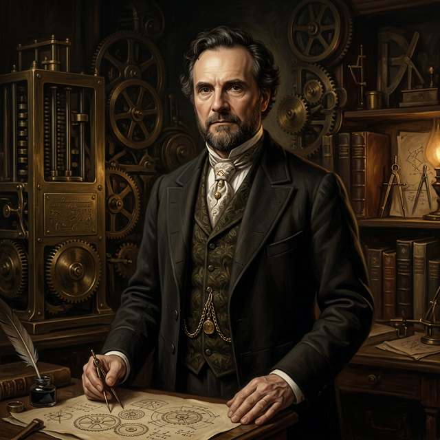

[ PROFILE_012 · PIONEER ]

Father of Computing · 计算机之父
1791.12.26 — 1871.10.18
计算机之父。发明了第一台机械计算机（差分机），设计了第一台计算机打印机。
他的自传是一个很好的切片去了解文艺复兴后期维多利亚时代的科学家发明家以及那个充满希望的时代。
以 Babbage 自传里面的一段话推荐此人：
Charles Babbage，维多利亚时代英国数学家、哲学家、发明家与机械工程师，被誉为计算机之父。他一生横跨数学、政治经济学、密码学与工程学等多个领域，是维多利亚时代最杰出的博学者之一。
Babbage 出生于伦敦一个富裕的银行家家庭。幼年体弱多病，求学经历辗转。凭借自学与天赋，他在数学上早早超越了同龄人。1810年进入剑桥大学三一学院，却对当时大学落后的数学教学深感失望。他与几个志同道合者于1812年共同创立了解析学会，致力于将欧陆拉格朗日微积分引入英国数学界。
在 Babbage 所处的时代，科学与工程所依赖的数学用表全由人工逐一计算，错误频发。1821年前后，一次核对天文数据的经历让他萌生了用机器自动计算数学表的念头。1822年，他开始设计差分机——一种能够自动计算多项式函数值、消除人为误差的机械装置。然而，大量经费与漫长时光消耗殆尽，机器始终未能完工。
差分机项目搁浅后，Babbage 并未止步。1830年代，他开始构想更为宏大的分析机——一台真正意义上的通用计算机器。分析机借鉴提花织机的打孔卡片作为程序输入，设有独立的存储仓（Store）与运算磨（Mill），支持条件分支与循环控制。其基本架构与现代冯·诺依曼体系高度契合。
诗人拜伦之女 Ada Lovelace 与其密切合作，为分析机翻译、注释并撰写了一套计算伯努利数的算法，被誉为史上第一位程序员。她留下的那句话至今传颂：
1832年出版的《论机器与制造业的经济》是工业时代最重要的经济学著作之一。书中提出的巴贝奇原则——将劳动过程按技能细分——深刻影响了泰勒的科学管理思想，亦被马克思广泛引用。
Babbage 在密码学上亦有卓越贡献。1850年代克里米亚战争期间，他率先破解了维吉尼亚自动密钥密码，但被当作军事机密封存，直至1985年才正式确认。
1871年10月18日，Babbage 在伦敦辞世，享年79岁。他的半个大脑至今陈列于伦敦科学博物馆，另一半存于亨特利安博物馆。Babbage 生前未能亲眼看到自己的机器运转，却以一人之力勾勒出整个计算机时代的蓝图。
核心洞见：方法二只需要「加法」，不需要「乘法」。机器做加法比做乘法容易得多。
| 表值 | 一阶差分 |
|---|---|
| 5 | 5 |
| 10 | 5 |
| 15 | 5 |
| 20 | 5 |
| 25 | — |
这张表的一阶差分是常数5。只需记住这个常数，一直加就能生成整张表。
更复杂的情况：三角数（1, 3, 6, 10, 15...）。一阶差分不是常数（2,3,4,5...），但二阶差分是常数 = 1。
这意味着机器只需要存储三个数、每步做两次加法，从不需要乘法。
把「复杂的乘除法/函数计算」转化为「简单的重复加法」，让纯机械装置无需人脑介入，自动生成整张数学表格。这在1822年是革命性的思想——本质上就是用算法的规律性来换取机械的可重复性。
| 部件 | 英文 | 类比 | 功能 |
|---|---|---|---|
| 存储库 | The Store | 纱线仓库 | 存放变量与常数（1000列 × 50位数字） |
| 磨坊 | The Mill | 织布机头 | 实际执行运算的部件 |
| 操作卡 | Operation Cards | 织布花样卡 | 指定要执行的运算（+−×÷） |
| 变量卡 | Variable Cards | 纱线选择 | 指定操作哪些数据列 |
机器提前"预判"哪些位需要进位，一次性完成所有进位。任意位数的两个大数相加，只需10个时间单位即可完成。这是1834年的思想，相当超前。
当某一列的计算结果从正变负（穿越零）→ 最高位产生特殊进位信号 → 触发机械臂动作 → 自动切换到下一组操作卡。这实现了现代编程的 if/else 条件分支和 loop 循环。
有限机器如何处理无限计算？将空间的无限转化为时间的无限——常数可拆分、卡片可无限串接、结果可自动打印到新卡片。
| 操作 | 速度 |
|---|---|
| 加法 / 减法 | 每分钟 60 次 |
| 50 位 × 50 位乘法 | 每分钟 1 次 |
| 100 位 ÷ 50 位除法 | 每分钟 1 次 |
| 最大精度 | 50 位有效数字 |
全书36章，结构松散，不是按时间顺序写的，而是想到哪写到哪。这不是一本严肃的学术自传，而是一个聪明、刻薄、愤世嫉俗的老人，用幽默而尖锐的笔触回顾自己这一生。
童年事件：
• 走失在伦敦桥：5岁时跟错了人，独自站在桥上镇定等待，被发现时正在悠然吃梨
• 试图召唤魔鬼：独自爬上废弃阁楼，用指血画圆圈、倒背主祷文，等了很久什么都没来，却因此开始怀疑宗教
• 银色自动人偶：母亲带他参观机械展，两个精美的银色女性机器人让他着迷——这成为他一生痴迷机械的起点
• 与同学马丽亚特（著名小说家）夜间斗智斗勇，用绳子、铁链、锁链层层升级
剑桥：创立分析学会对抗守旧的数学教学，创办"鬼魂俱乐部"和"救援俱乐部"（若成员超过一年未报平安默认被关进疯人院，全体出动营救）
灵感起源：1812年某个夜晚，他在剑桥盯着一本对数表发呆，突然想到——这些表格能不能用机器计算出来？
差分机建造史：1822年公开计划 → 1823年政府拨款 → 近20年与历届政府漫长谈判 → 工程师克莱门特中途停工 → 1842年政府最终放弃。共耗资约17000英镑，却永远未能完工。
最经典的问答：有议员问他"如果输入错误的数字，能算出正确答案吗？"——他对这种问题感到无言以对。
• 阿尔伯特亲王：对科学有真诚兴趣，多次参观巴贝奇的机器
• 惠灵顿公爵（滑铁卢英雄）：亲自视察差分机，务实直接绝不废话
• 拉普拉斯（天体力学奠基人）：谈及差分机时热情支持
• 洪堡（伟大博物学家）：学识渊博、精力充沛，是巴贝奇最欣赏的同时代人
• 为了了解冶金工艺，他亲自爬进冷却中的火炉观察
• 系统研究了各种锁具的结构，甚至学会了撬锁
• 亲身进入圣贾尔斯贫民窟记录底层社会的生活状态
• 像研究机器一样研究舞台机关、布景技术和演员表演
• 两次竞选议会均落败，用辛辣笔触揭示维多利亚选举的腐败
他用差分机做了一个精妙的比喻：机器从1开始计数……运行99万9990次，到第100万次——突然改变规律。对观察者来说这是奇迹，但实际上这一切从机器被制造的那一刻起就已经被编写进去了。
他的宗教立场：坚定的自然神论者。越深入研究支配物质宇宙的规律，人就越相信上帝。但他通过科学观察宇宙来认识上帝，而非通过圣经。他甚至写道：如果三个事物可以是一个事物，那么整个算术科学就立刻被消灭了。
巴贝奇在教堂主教包厢里睡着了，经历了宏大的灵魂出窍式幻象。醒来后，枕头下面压着一小块腐烂的格洛斯特奶酪。
他用分析机设计者的严肃数学方法去推算这块奶酪的生辰八字。结果一位虚构的大地质学家 Professor Ponderdunder（讽刺性名字）立刻看到了他公式的"潜力"，申请经费去尼尼微和金字塔……十天后巴贝奇发现：他的计算忘了考虑闰年，整个逻辑完全崩溃。
这是用最严格的数学逻辑做最荒唐的事，嘲讽那些用同样的严谨外壳包装空洞推论的学者。
| 具体工作 | 背后的元问题 |
|---|---|
| 差分机 / 分析机 | 推理过程能否被机械化？思维规律能否外包给机器？ |
| 机械记谱法 | 能否发明符号系统，让机械设计变成可证明的科学？ |
| 奇迹理论 | 看似"超自然"的事件，能否用更高层次的规律理解？ |
| 符号的力量 | 正确的符号系统能让人思考原本不可能思考的事物 |
| 统计学会的创立 | 如何让人类集体知识的积累更有效率？ |
| 劳动分工理论 | 精确匹配技能与任务的最优方案 |
Babbage 一生都在研究：发现这件事本身的机制是什么？
然后用机器、制度、符号、方法论，把这个机制从人脑中提炼出来，让它变得可重复、可传承、可扩展。